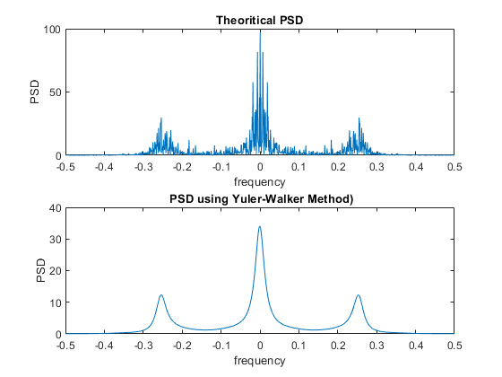

sigma = 1;
noise = sigma.*normrnd(0,1,1,N);
x = filter(1, [1, -0.9, 0.81, -0.729], noise).';
f = fftshift(fft(x, 1024));
f_hat=linspace(-1,1,1024)*1/2;
subplot(2,1,1);
plot(f_hat,abs(f).^2/N);
xlabel( "frequency");
ylabel("PSD");
title(" Theoritical PSD ")
rxx = zeros(p+1,1);
for m = 1:(p+1)
for n = 1: N-m
rxx(m,1)=rxx(m,1)+x(n)*x(n+m-1);
end
rxx(m,1)= (rxx(m,1)./N);
end
R = zeros(p+1,p+1);
for i=1:p+1
for j=1:p+1
R(i,j)= (rxx(abs(i-j)+1,1));
end
end
AR = R(1:p,1:p);
C=R(2:p+1,1);
A=-inv(AR)*C;
var=AR(1,1)+ sum(A(:,1).*C(:,1));
Y = zeros(1024,1);
for f = 1:1024
for k = 1:p
e = exp(-1j*2*pi*f/1024*k);
Y(f,1) = Y(f,1) + A(k,1)*e;
end
Y(f,1) = Y(f,1) +1;
end
P = var./(Y.*conj(Y));
subplot(2,1,2);
plot(f_hat, fftshift(P));
xlabel( "frequency");
ylabel("PSD");
title(" PSD using Yuler-Walker Method)");
print(gcf,'05b.png','-dpng','-r300');
